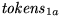
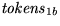
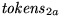
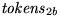

Next: Rules
Up: ML-Yacc specifications
Previous: Optional ML-Yacc Declarations
These optional declarations improve error-recovery:
- %keyword
- Specify all keywords in a grammar here. The %keyword
should be followed by a list
of terminal names. Fixes involving keywords are generally dangerous;
they are prone to substantially altering the syntactic meaning
of the program. They are subject to a more rigorous parse check than
other fixes.
- %prefer
- List terminals to prefer for insertion after the %prefer.
Corrections which insert a terminal on this list will be chosen over
other corrections, all other things being equal.
- %subst
- This declaration should be followed by a list of clauses of the
form {terminal} for {terminal}, where items on the list are
separated using a |. Substitution corrections on this list
will be chosen over all other corrections except preferred insertion
corrections (listed above), all other things being equal.
- %change
- This is a generalization of %prefer and %subst.
It takes a the following syntax:
 ->  |  ->  etc.
where each tokens is a (possibly empty) seqence of tokens. The
idea is that any instance of can be ``corrected'' to
, and so on. For example, to suggest that a good
error correction to try is IN ID END (which is useful for the
ML parser), write,
%change -> IN ID END
- %value
- The error-correction algorithm may also insert terminals with values.
You must supply a value for such a terminal. The keyword
should be followed by a terminal and a piece of
code (enclosed in parentheses) that when evaluated supplies the value.
There must be a separate %value declaration for each terminal with
a value that you wish may be inserted or substituted in an error correction.
The code for the value is not evaluated until the parse is
successful.
Do not specify a %value for terminals without
values. This will result in a type error in the program produced by
ML-Yacc.
Next: Rules
Up: ML-Yacc specifications
Previous: Optional ML-Yacc Declarations
Dave MacQueen
4/24/2000